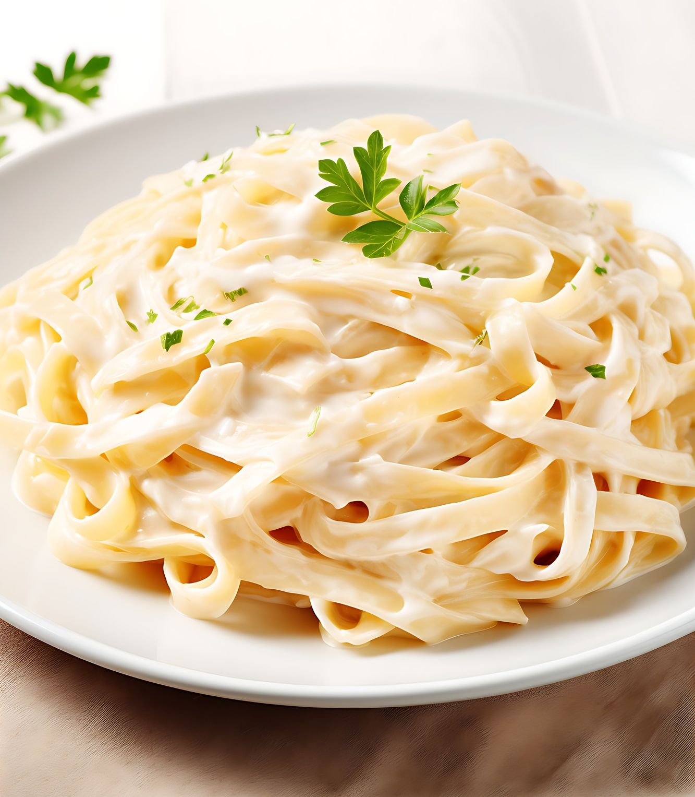

Macarrão ao Molho Branco

Descrição
Receita deliciosa de macarrão ao molho branco.
Ingredientes
- 1 pacote de macarrão talharim 500 g
- 4 dentes de alho amassados
- Azeite
- 1 cebola média picada
- 1 caixa de creme de leite
- 1 ½ colher de sopa de margarina
- 500 ml de leite
- 1 pacote de queijo parmesão ralado 100 g
- 1 colher de sopa rasa de maisena
- Sal e pimenta-do-reino a gosto.
Etapas
- Comece enchendo uma panela com cerca de 5 litros de água, coloque um pouco de sal e espere ferver.
- Quando começar a borbulhar, coloque o macarrão e deixe cozinhar.
- Quando a massa estiver na consistência certa, coloque para escorrer.
- Para fazer o molho, pegue uma outra panela, deixe a margarina no fogo até derreter e então, acrescente a cebola.
- Acrescente um pouco de sal (para ajudar a cebola desidratar), refogue por uns minutos e, em seguida, acrescente a
pimenta a gosto, o creme de leite e misture por uns minutos.
- Dissolva a maisena no leite (misturando com uma colher) e, depois, acrescente a mistura à panela.
- Mexa até que o molho fique em uma consistência mais encorpada, desligue o fogo e, por fim, adicione o queijo ralado.
- Na mesma panela que cozinhou o macarrão, coloque o alho amassado, um pouco de azeite e deixe refogar um pouco.
- Quando o alho estiver frito, jogue o macarrão na panela e misture para que a massa fique mais saborosa.
- Em seguida, coloque-a no prato, jogue o molho por cima e prontinho!